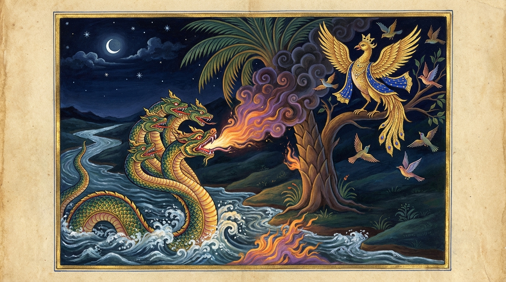

3. ඝතාසන ජාතකය (133)
“ඛේමං යහිං” යන මේ ජාතක ධර්ම දේශනාව ශාස්තෲන් වහන්සේ ජේතවනාරාමයේ වැඩ වසන සමයෙහි එක්තරා භික්ෂුවක් අරභයා දේශනා කළ සේක. ඒ භික්ෂුව ශාස්තෲන් වහන්සේ වෙතින් කමටහන් (භාවනා උපදෙස්) ලබාගෙන ප්රත්යන්ත දේශයක (දුර බැහැර පෙදෙසක) පිහිටි ගමක් ඇසුරු කොට වන සෙනසුනක වස් සමාදන් විය. පළමු මාසයේදීම ඔහු පිඬු පිණිස ගිය අතරතුර පන්සල ගිනි ගත්තේය. වාසස්ථානයක් නොමැතිව පීඩාවට පත් භික්ෂුව දායකයන්ට ඒ බව දැන්වීය. “ස්වාමීනි, ඉවසන්න. පන්සල සාදා දෙන්නෙමු. මේ දිනවල සී සෑම් ආදී ගොවිතැන් කටයුතු තිබේ” යයි කියමින් මිනිස්සු තුන් මසක්ම කල් දැමූහ. භික්ෂුවට සුදුසු සෙනසුන් පහසුකම් (සප්පාය) නොමැති වූ බැවින් කමටහන් මස්තකප්රාප්ත කර ගැනීමට නොහැකි විය. හෙතෙම භාවනාවෙන් නිමිති මාත්රයක් හෝ උපදවා ගත නොහැකිව වස් කාලය ගෙවා, ජේතවනයට ගොස් ශාස්තෲන් වහන්සේ වැඳ එකත්පස්ව හුන්නේය. ශාස්තෲන් වහන්සේ ඔහු සමඟ පිළිසඳර කතා කොට, “කිම භික්ෂුව, කමටහන් සඵල වී දැ?” යි විමසූ සේක. භික්ෂුව මුල සිටම එය අසාර්ථක වූ ආකාරය පැවසීය. එවිට ශාස්තෲන් වහන්සේ “භික්ෂුව, පෙර තිරිසන් සතුන් පවා තමන්ට සුදුසු නුසුදුසු බව දැන, වාසයට සුදුසු කල්හි එහි වැස, නුසුදුසු කල්හි ඒ ස්ථානය අත්හැර වෙනත් තැනකට ගියහ. ඔබ කුමක් නිසා තමන්ට සුදුසු නුසුදුසු බව දැන නොගත්තෙහිදැ?” යි වදාරා, ඔහු විසින් ආරාධනා කරන ලදුව අතීත කථාව ගෙනහැර දැක්වූ සේක.
අතීතයේ බරණැස් නුවර බ්රහ්මදත්ත රජු රාජ්යය කරන කල්හි, බෝධිසත්වයෝ කුරුලු යෝනියෙහි උපත ලබා, වැඩිවියට පත්ව, රූප ශෝභාවෙන් යුත් පක්ෂි රජෙකු වී, එක් වන පෙදෙසක විලක් අසල අතු රිකිලි සහ කොළ ගහන වූ මහා වෘක්ෂයක් ඇසුරු කොට පිරිවර සහිතව වාසය කළහ. බොහෝ පක්ෂීන් ඒ ගසෙහි දිය මතුපිටට විහිදී ගිය අතුවල වාසය කරමින් ජලයට වසුරු (මළ) හෙළති. එකල එම විලෙහි රෞද්ර වූ නාග රජෙක් වාසය කරයි. “මේ පක්ෂීන් මගේ නිවහන වූ විලට වසුරු හෙළති. එබැවින් මා විසින් ජලයෙන් ගින්නක් මතු කොට, ගස දවා මොවුන් පලවා හැරිය යුතුය” යි ඔහුට සිතුණි. කිපුණු සිත් ඇති හෙතෙම රාත්රී කාලයෙහි සියලු පක්ෂීන් එක්රැස්ව ගස් අතුවල නිදාගත් කල්හි, පළමුව ලිප තැබුවාක් මෙන් ජලය පැසවා, දෙවනුව දුම් නංවා, තෙවන වරට තල් කඳක් පමණ වූ මහා ගිනි ජාලාවක් මතු කළේය. බෝධිසත්වයෝ ජලයෙන් ගිනිදැල් නැඟෙනු දැක, “පින්වත් පක්ෂියෙනි, ගින්නක් ඇවිළුණු විට එය ජලයෙන් නිවනු ලැබේ. එහෙත් දැන් ජලයම ගිනිගෙන ඇත. අපට මෙහි විසිය නොහැකිය. වෙනත් තැනකට යමු” යි පවසා මේ ගාථාව වදාළේය.

“යම් තැනක නිර්භය බව (ක්ෂේම) තිබිය යුතු ද, එතැන සතුරා නැගී සිටියේය. ජලය මැද ගින්නක් ඇවිළෙයි. අද පොළොවෙහි වූ ගසක අපට වාසයක් නැත. පක්ෂියෙනි, වෙනත් දිශාවක් බලා යවු! අද අපට ආරක්ෂක ස්ථානයෙන් (සරණ) ම බිය හටගත්තේය.”
එහි ඛෙමං යහිං තත්ථ අරී උදීරිතො යනු, යම් ජල තලයක ක්ෂේමභාවය හෙවත් නිර්භයභාවය තිබිය යුතු ද, එහි තමාගේ ප්රතිවාදියා වූ සතුරා නැගී සිටියේය යන්නයි. දකස්ස යනු ජලයෙහි ය. ඝතාසනො යනු ගින්නයි. ගින්න ගිතෙල් අනුභව කරන (ඝතං අස්නාති) බැවින් ‘ඝතාසන’ යැයි කියනු ලැබේ. න අජ්ජ වාසො යනු අද අපට මෙහි වාසයක් නැත යන්නයි. මහියා මහීරුහෙ යනු මහීරුවා නමින් ගස හැඳින්වේ; මේ මහපොළොවෙහි උපන් ගසෙහි යන අර්ථයි. දිසා භජව්හො යනු වෙනත් දිශාවක් ඇසුරු කරවු; යවු. සරණාජ්ජ නො භයං යනු අද අපට ආරක්ෂාව ලැබිය යුතු ස්ථානයෙන් ම බියක් හටගත්තේය; පිහිට විය යුතු තැනින් ම බිය උපන්නේය යන අර්ථයි.
බෝධිසත්වයෝ මෙසේ පවසා තමාගේ වචනය පිළිගත් පක්ෂීන් ද රැගෙන අහසට නැඟී වෙනත් තැනකට ගියහ. බෝධිසත්වයන්ගේ වචනය පිළි නොගෙන එහිම රැඳී සිටි පක්ෂීන් ජීවිතක්ෂයට පත් වූහ.
ශාස්තෲන් වහන්සේ මේ ධර්ම දේශනාව ගෙනහැර දක්වා, චතුරාර්ය සත්යය ප්රකාශ කොට ජාතකය සමාධාන කළ සේක. සත්ය දේශනාව අවසානයේ ඒ භික්ෂුව රහත් ඵලයෙහි පිහිටියේය.
“එකල බෝධිසත්වයන්ගේ වචනය පිළිගත් පක්ෂීන් වූයේ දැන් මේ බුදු පිරිසය. පක්ෂි රාජයා වූයේ මම ම වෙමි” යි වදාළ සේක.
තුන්වන වූ ඝතාසන ජාතක වර්ණනාව නිමාවිය.